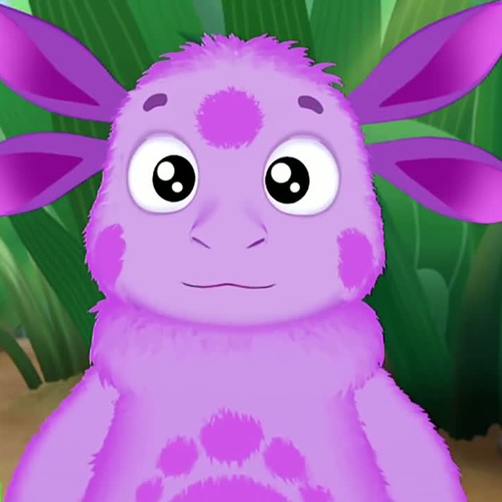

Лунтик

Лунтик - персонаж из российского мультсериала, ориентированного на детскую аудиторию.
Транслируется на телевидении с 1 сентября 2006 года по настоящее время.
Ключевой темой стали приключения маленького пушистого существа Лунтика — космического пришельца,
который родился на Луне и вылупился из яйца.
Мультсериал состоит из более чем 500 серий, сюжеты которых содержат в себе не только развлекательные, но
и моральные и даже обучающие темы
(например, в серии «Каждому по планете» рассказывается о строении Солнечной Системы).
Продолжительность серий составляет не больше 5 минут.
Действие происходит в лесу около пруда.
Большинство персонажей — это мелкие насекомые, рыбы, лягушки, пчёлы и т. п.
Они олицетворяют собой взрослых и детей.
Главные персонажи — это дети (прежде всего Лунтик),
с которыми происходят разные приключения, во время которых они познают мир и учатся взаимоотношениям в
обществе.